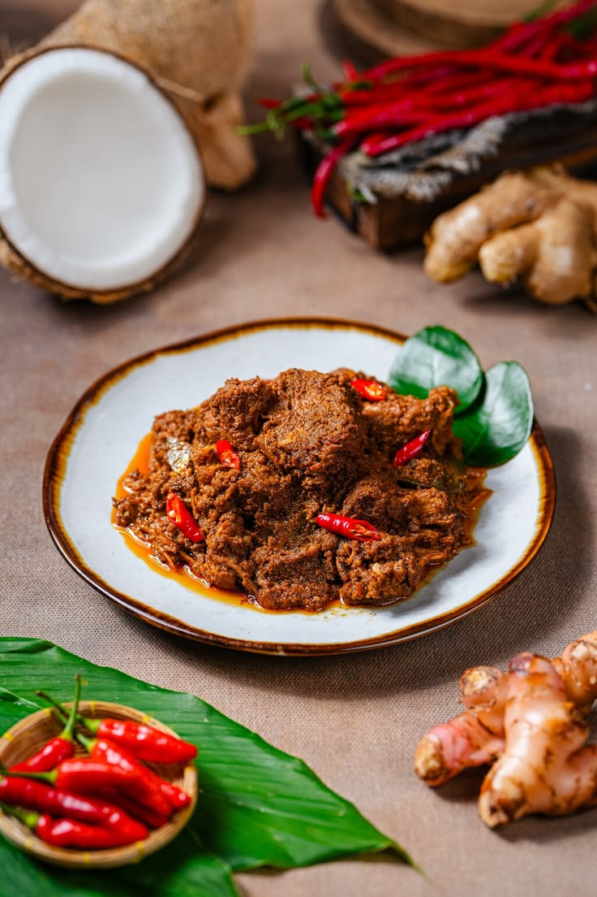

“Bumbu turun-temurun, disajikan hangat setiap hari.”
Taste of Nusantara menyajikan masakan tradisional Indonesia — dari rendang yang dimasak lama hingga es cendol buatan sendiri. Semua menu dibuat pesanan, tanpa penyedap berlebih.
